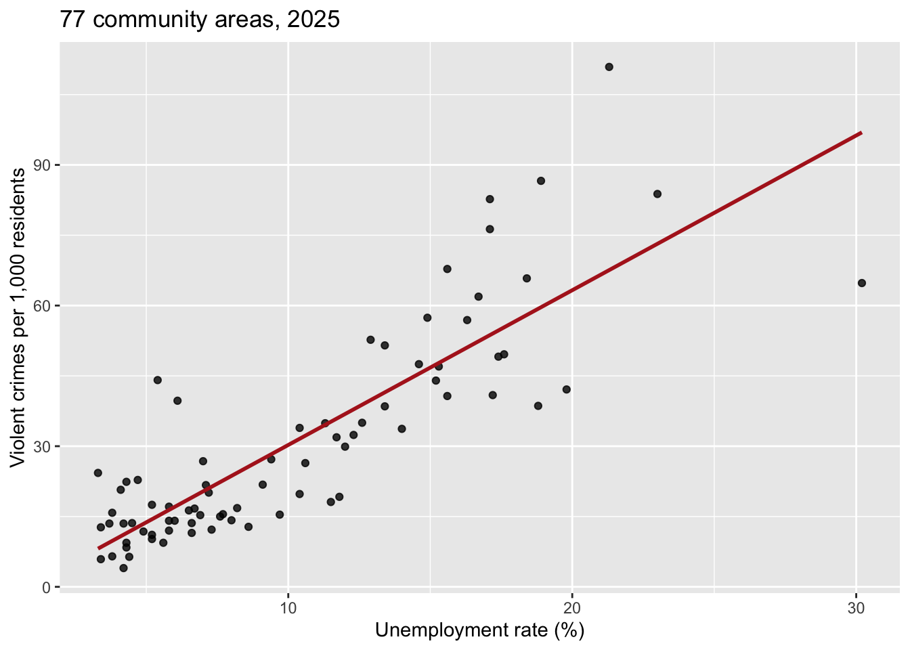
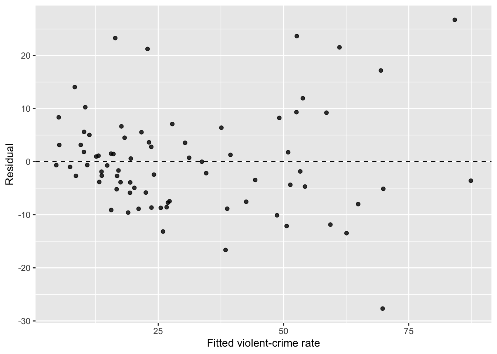
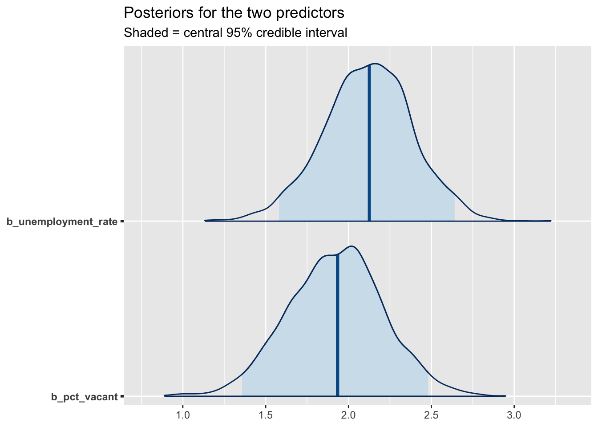

Lab 11 · Multiple Regression: Chicago’s 77 Areas, Then 500 Neighborhoods
CRJU 705 · Session 11
Goal: run the complete multiple-regression workflow from today’s lecture — fit with lm(), interpret coefficients in holding-constant language, diagnose with a residual plot and VIF, then fit the Bayesian twin with brms and read the posteriors — first on the Chicago community-area data from lecture, then on your own model with the Lab 3 neighborhoods.
There’s no new data-skills content today: this lab is pure statistics practice. (Homework 11 brings the wrangling back — you’ll clean a file before regressing on it.)
How labs work: run the Setup chunk as-is, follow the Walkthrough along with me, then complete the Your Turn tasks in your own script. The Exit Ticket gets submitted to Canvas before you leave.
Setup
Open RStudio, start a new R script, and run:
One new package today: install.packages("car") — we use it for VIF. (bayesplot came along free when you installed brms for ANOVA week, so library(bayesplot) should just work.) And the usual brms reminder: the first brm() of a session pauses at Compiling Stan program... for a minute. Not frozen. Compiling.
Our walkthrough data are the 77 Chicago community areas — every 2025 incident aggregated to the area level and joined with census measures (codebook on the Data page). One row per area, not per person or per crime. Keep that word — area — in every sentence you write today.
The question: how do unemployment and vacant housing relate to an area’s violent-crime rate — each adjusted for the other?
Walkthrough
Look first
Always. Before any model:
ggplot(areas, aes(unemployment_rate, violent_rate)) +
geom_point(alpha = 0.8) +
geom_smooth(method = "lm", se = FALSE, color = "firebrick") +
labs(title = "77 community areas, 2025",
x = "Unemployment rate (%)",
y = "Violent crimes per 1,000 residents")
A strong, roughly linear, upward relationship — with the high-violence areas scattering farther from the line. Remember that scatter; it comes back in diagnostics.
One predictor
Call:
lm(formula = violent_rate ~ unemployment_rate, data = areas)
Residuals:
Min 1Q Median 3Q Max
-32.137 -6.340 -2.670 5.843 43.339
Coefficients:
Estimate Std. Error t value Pr(>|t|)
(Intercept) -2.7444 2.8629 -0.959 0.341
unemployment_rate 3.3007 0.2463 13.400 <2e-16 ***
---
Signif. codes: 0 '***' 0.001 '**' 0.01 '*' 0.05 '.' 0.1 ' ' 1
Residual standard error: 12.27 on 75 degrees of freedom
Multiple R-squared: 0.7054, Adjusted R-squared: 0.7014
F-statistic: 179.5 on 1 and 75 DF, p-value: < 2.2e-16Three numbers to pull out of that wall of output, in order of importance:
- The slope (~3.3): each additional percentage point of unemployment is associated with about 3.3 more violent crimes per 1,000 residents.
- Multiple R-squared (~0.71): unemployment alone accounts for about 71% of the variance in violent-crime rates across areas.
- The slope’s p-value: far below .05 — a slope this steep essentially never shows up when the true slope is zero.
Two predictors
Areas with high unemployment also tend to have more vacant housing. Does each carry its own association, or is one riding the other’s coattails?
Call:
lm(formula = violent_rate ~ unemployment_rate + pct_vacant, data = areas)
Residuals:
Min 1Q Median 3Q Max
-27.6759 -5.8167 -0.9943 4.5144 26.7266
Coefficients:
Estimate Std. Error t value Pr(>|t|)
(Intercept) -9.2679 2.4616 -3.765 0.000332 ***
unemployment_rate 2.1156 0.2620 8.075 9.35e-12 ***
pct_vacant 1.9352 0.2859 6.769 2.65e-09 ***
---
Signif. codes: 0 '***' 0.001 '**' 0.01 '*' 0.05 '.' 0.1 ' ' 1
Residual standard error: 9.708 on 74 degrees of freedom
Multiple R-squared: 0.818, Adjusted R-squared: 0.8131
F-statistic: 166.3 on 2 and 74 DF, p-value: < 2.2e-16Compare the unemployment slope across the two models: ~3.3 alone → ~2.1 with vacancy in the model. That drop is the whole point of multiple regression: part of what the simple model credited to unemployment was really variance it shares with vacancy. Each coefficient is now an adjusted association — unemployment’s relationship with violence among areas with similar vacancy, and vice versa. Both stay strongly significant, and R² rises to ~0.82.
Interpretation sentences worth copying:
- “Holding vacancy constant, each additional percentage point of unemployment is associated with about 2.1 more violent crimes per 1,000 residents.”
- “Holding unemployment constant, each additional percentage point of vacant housing is associated with about 1.9 more violent crimes per 1,000 residents.”
- What we may not say: anything with “causes,” “drives,” or “increases” as an action verb — and nothing about individual people. These are adjusted associations between areas (Session 10’s ecological fallacy never left).
Diagnose: the residual plot
The model assumes its misses are patternless. Look:
chi_diag <- tibble(fitted = fitted(chi_m2), residual = resid(chi_m2))
ggplot(chi_diag, aes(fitted, residual)) +
geom_hline(yintercept = 0, linetype = 2) +
geom_point(alpha = 0.8) +
labs(x = "Fitted violent-crime rate", y = "Residual")
What to check, in order: (1) no curve — the cloud shouldn’t bend (a bend means the straight-plane shape is wrong); (2) even spread — here the spread visibly widens at higher fitted values, so the model misses by more in high-violence areas. That fanning doesn’t bias the slopes, but it means the error bars are least trustworthy exactly where the stakes are highest — say so when you report.
Diagnose: VIF
If predictors are near-duplicates of each other, the model can’t apportion credit between them and the coefficients wobble. VIF puts a number on the redundancy:
vif(chi_m2)unemployment_rate pct_vacant
1.807177 1.807177 Rules of thumb: above 5, pay attention; above 10, you have a problem. Ours sit around 1.8 — unemployment and vacancy are correlated (r ≈ 0.67) but each still brings its own information. If you ever do see a huge VIF: drop one of the offenders, or combine them into an index. More data won’t fix redundancy.
The Bayesian version
Same formula, same brm() pattern as ANOVA week:
chi_bayes <- brm(violent_rate ~ unemployment_rate + pct_vacant,
data = areas,
chains = 2, iter = 2000, seed = 705, refresh = 0)summary(chi_bayes) Family: gaussian
Links: mu = identity
Formula: violent_rate ~ unemployment_rate + pct_vacant
Data: areas (Number of observations: 77)
Draws: 2 chains, each with iter = 2000; warmup = 1000; thin = 1;
total post-warmup draws = 2000
Regression Coefficients:
Estimate Est.Error l-95% CI u-95% CI Rhat Bulk_ESS Tail_ESS
Intercept -9.25 2.42 -13.93 -4.68 1.00 2613 1686
unemployment_rate 2.12 0.27 1.58 2.64 1.00 1531 1419
pct_vacant 1.92 0.29 1.36 2.48 1.00 1472 1317
Further Distributional Parameters:
Estimate Est.Error l-95% CI u-95% CI Rhat Bulk_ESS Tail_ESS
sigma 9.82 0.79 8.50 11.55 1.00 1935 1529
Draws were sampled using sampling(NUTS). For each parameter, Bulk_ESS
and Tail_ESS are effective sample size measures, and Rhat is the potential
scale reduction factor on split chains (at convergence, Rhat = 1).Reading the Regression Coefficients block: Estimate is the posterior mean (it lands almost exactly on lm()’s estimate — expected with default priors and 77 areas), and l-95% CI / u-95% CI bound the credible interval. Both intervals sit clearly away from zero. Quick health checks: Rhat at 1.00 and ESS in the hundreds-plus mean the chains behaved.
mcmc_areas(chi_bayes, pars = c("b_unemployment_rate", "b_pct_vacant"),
prob = 0.95) +
labs(title = "Posteriors for the two predictors",
subtitle = "Shaded = central 95% credible interval")
The interpretation rule, carried over from ANOVA week: if a coefficient’s 95% credible interval includes 0, zero remains a credible value — no credible association. If it excludes 0, the association is credible, and you may say: “given the data and priors, there’s a 95% probability the coefficient lies in this range.” (The sentence the confidence interval never let you say.)
Your Turn
Back to the 500 simulated neighborhoods from Lab 3 — poverty, unemployment, disorder, and last year’s assault counts:
nbhd <- read_csv("https://smourtgos.github.io/crju705/data/neighborhoods.csv")Work in your own script. Comment each answer.
1. Make the units speak. poverty_rate and unemployment_rate are stored as proportions (0–1), so a raw slope would describe an absurd 0%-to-100% jump. Rescale before fitting — lecture’s “watch the units” lesson, applied:
nbhd <- nbhd |>
mutate(poverty_pct = poverty_rate * 100,
unemployment_pct = unemployment_rate * 100)
# Then look first: scatterplot assaults ~ poverty_pct with an lm smooth.2. Fit and interpret. Regress assaults on poverty_pct and unemployment_pct. In comments: one holding-constant sentence per coefficient (units: assaults per percentage point), and what R² says. Expect a much humbler R² than Chicago’s — real-feeling individual-ish noise, and that’s fine; say what the model does explain, not more.
# nbhd_m <- lm(assaults ~ poverty_pct + unemployment_pct, data = nbhd)
# summary(nbhd_m)3. The diagnostics moment. Residual plot + VIF, exactly as in the Walkthrough. Two things to note in comments: (a) the residuals form diagonal stripes — that’s because assaults only takes small whole values (0, 1, 2, …), not a bug, but it is a hint that a count outcome bends the linear model’s assumptions (counts and yes/no outcomes get their own tools — that story starts next session); (b) the VIF values — poverty and unemployment are correlated here (r ≈ 0.48), so is it redundancy trouble or not?
# residual plot on nbhd_m, then vif(nbhd_m)4. The Bayesian twin. Fit the brm() version (same options as the Walkthrough; ~500 rows samples fast), look at summary(), and make the mcmc_areas() plot for b_poverty_pct and b_unemployment_pct. In comments: one frequentist sentence and one Bayesian sentence about the poverty coefficient — each including the size of the association (assaults per percentage point, or per 10 points if that reads better), not just “significant”/“credible.”
# nbhd_bayes <- brm(assaults ~ poverty_pct + unemployment_pct, data = nbhd,
# chains = 2, iter = 2000, seed = 705, refresh = 0)5. (Stretch) Does disorder earn its keep? Add disorder_level to the frequentist model (make it a factor with levels Low → Moderate → High → Very High first). Check the coefficients and the adjusted R². Does observed disorder tell you anything about assaults that poverty and unemployment didn’t already? Connect your answer to lecture’s third-predictor slide.
(Reading a factor in lm(): R drops the first level — Low — as the reference, so each disorder_level coefficient is that level’s difference from Low, holding the other predictors constant. Same idea as ANOVA’s group comparisons, wearing regression clothes.)
# your code hereExit Ticket
Submit a short R script to Canvas before you leave, containing:
- A comment: your holding-constant interpretation of the
poverty_pctcoefficient — one sentence, with units - A comment: what R² told you about your neighborhoods model, in signal-and-noise terms — and one thing the model leaves unexplained
- A comment: what your residual plot and VIF each checked, and what each said (one sentence apiece)
- Your poverty conclusion, two ways: one frequentist sentence (estimate + CI or p) and one Bayesian sentence (posterior + credible interval)
- A comment: why “holding unemployment constant” is not the same claim as “poverty causes assaults” — name one lurker these neighborhoods might be hiding